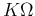
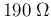
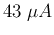
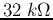
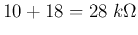

Next: About this document ...
Up: Lab4
Previous: Lab4
The schematic diagram of a multimeter is shown in the figure below:

- Pick up the hardware of the multimeter kit from the stock room,
including all the components (resistors, potentiometer, meter head,
rotary switch, batteries, etc.).
- Study the diagram above carefully to understand how the meter
measures the voltages, currents and resistances at each of the positions
of the rotary switch. The rectangular shape to the left of the meter
head (a circle with an arrow in it) represents two parallel diodes
with opposite polarity for the protection of the meter head. You don't
need to worry about this.
- The part marked by 10KBVR is a potentiometer, a resistor of 10
 but with an additional terminal which is a piece of metal
that can slide along the resistor, so that the resistance between the
3rd terminal and any of the other two is variable between 0 and 10
. See
here
for more detailed explanation. This potentiometer is needed to calibrate
the Ohmmeter. Specifically, before taking the measurement of a resistance,
the potentiometer needs to be adjusted so that the needle points to
zero on the resistance scale when the two leads of the multimeter touch
each other for zero resistance.
- Understand how the rotary switch works. It is represented by the
18 circles on top of the diagram and the two layers of rectangular shapes
on the bottom. At each of the 18 positions, the corresponding circle on
top is connected to both of the rectangles, while all remaining circles
are not connected to anything. If you still have difficulty understanding
this, it should be most helpful if you take a look at the physical parts
and the printed circuit board (PCB) in the kit.
- Find the resistance for each of the 13 resistors with their values
erased.
- Turn in your design on paper with all the resistance values before
the first deadline.
- Assemble the multimeter in the lab, verify every single position
to see if the meter works as expected.
Hints
Following these steps:
- Study the meter head assembly circuitry and find out the needed voltage
across the meter in series with the  resistor for the current
through the meter to be , needed for a full scale display. Then
find the currents through the two parallel branches with the resistances of
 and
. Next find the total current needed
by this meter assembly composed of all three parallel branches for a
full-scale meter display. This current can be used through out the calculation
in the following steps.
- Find the resistances needed to measure the currents and voltages at all
scales.
- Find out what values are needed for the upper and lower resistances of the
potentiometer during the calibration of the ohmmeter, i.e. when the two leads
of the meter are directly connected (short circuit with zero resistance) for a
full-scale display.
- Find the resistances needed to measure an unknown resistor value at all
four scales. Note that the middle value of the resistance measurement is 20,
200, 20k, or 200k
 for each of the scales, and the corresponding
current through the meter assembly should be half of the current needed for
a full scale display.
for each of the scales, and the corresponding
current through the meter assembly should be half of the current needed for
a full scale display.
How to find the polarity of a diode? (not necessarily trivial!)
When the voltage at the anode (labeled by a triangle) of a diode is higher
than that of the cathode, the diode has a very low resistance (close to a short
circuit, called forward biased). If the polarity is reversed, the resistance
of the diode becomes very high (close to an open circuit, called reverse biased).
The polarity of the diode can therefore be found by checking its resistance
using a multimeter.
However, we need to know which lead of the multimeter (when used as an ohmmeter)
is positive and which is negative. In most analog multimeters, such as the one
you are building, the positive lead (marked by +) is connected to the negative
end of the internal battery, while the other lead (marked by -, or COM for common)
is connected to positive end of the battery. So if the measured resistance of the
diode is low, the end connected to the COM lead of the multimeter is the anode
(triangle).
However, the polarities of digital multimeters may be the opposite, i.e., the
lead marked by + may be connected to the positive end of the internal battery.
In this case, the polarity of the diode can be determined in the opposite way
compared to the method above using an analog multimeter.
Moreover, some digital multimeters have a particular position for diode measurement.
Read this page
for more detailed discussions.
How to solder?
If you have never done soldering before, you should find
this
and this
useful.
Next: About this document ...
Up: Lab4
Previous: Lab4
Ruye Wang
2015-01-30